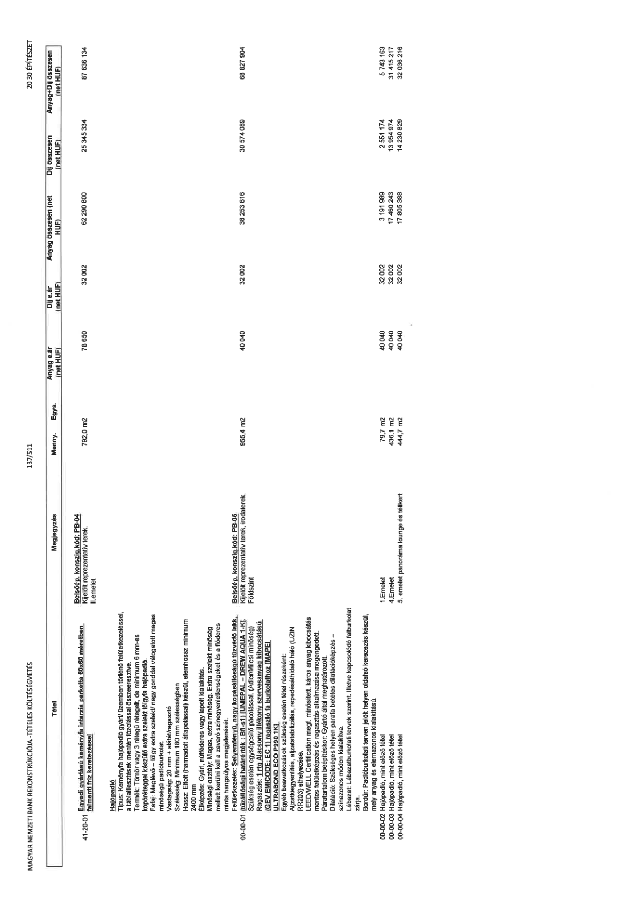

| Tétel | Megjegyzés | Menny. | Egys. | Anyag e.ár (net HUF) | Díj e.ár (net HUF) | Anyag összesen (net HUF) | Díj összesen (net HUF) | Anyag+Díj összesen (net HUF) |
|---|---|---|---|---|---|---|---|---|
| 41-20-01 Egyedi gyártású keményfa intarzia parketta 60x60 méretben falmenti fríz keretezéssel | Belsőép. konszig.kód: PB-04 Kijelölt reprezentatív terek. II.emelet | 792,0 | m2 | 78 650 | 32 002 | 62 290 800 | 25 345 334 | 87 636 134 |
| 00-00-01 Hajópadló Típus: Keményfa hajópadló gyári/ üzemben történő felületkezeléssel, a táblailesztések mentén fózolással összeszerelve. Termék: Tömör vagy 3 rétegű rétegelt, de minimum 6 mm-es kopóréteggel készülő extra szelekt tölgyfa hajópadló. Fafaj: Meglévő – tölgy extra szelekt/ nagy gonddal válogatott magas minőségű padlóburkolat. Vastagság: 20 mm + alátét/ragasztó Szélesség: Minimum 180 mm szélességben Hossz: Eltolt (harmadolt átlapolással) készül, elemhossz minimum 2400 mm Élképzés: Gyári, nútféderes vagy lapolt kialakítás. Felületkezelés: Selyemfényű, nagy kopásállóságú tűzvédő lakk. (tűzállósági határérték: Bfl-s1) UNIEPAL – DREW AQUA 1-K!. Szükség esetén egységesítő pácolással. (Adler/Milesi minőség) Ragasztás: 1 rtg Alacsony illékony szervesanyag kibocsátású (GEV EMICODE: EC 1) ragasztó fa burkolathoz (MAPEI ULTRABOND ECO P990 1K) Egyéb beavatkozások szükség esetén tétel részeként: Aljzatkiegyenlítés, aljzatstabilizálás, repedésháló háló (UZIN RR203) elhelyezése. LEED/WELL Certification megf. minősített, káros anyag kibocsátás mentes felületképzés és ragasztás alkalmazása megengedett. Páratartalom beépítéskor: Gyártó által meghatározott. Dilatáció: Szükséges helyen parafa betétes dilatációképzés – színazonos módon kialakítva. Lábazat: Lábazatburkolati tervek szerint. Illetve kapcsolódó falburkolat zárja. Bordűr: Padlóburkolati terven jelölt helyen oldalsó keretezés készül, mely anyag és elemrazonos kialakítású. | Belsőép. konszig.kód: PB-05 Kijelölt reprezentatív terek, irodaterek, Földszint | 955,4 | m2 | 40 040 | 32 002 | 38 253 816 | 30 574 089 | 68 827 904 |
| 00-00-02 Hajópadló, mint előző tétel | 1.Emelet | 79,7 | m2 | 40 040 | 32 002 | 3 191 989 | 2 551 174 | 5 743 163 |
| 00-00-03 Hajópadló, mint előző tétel | 4.Emelet | 436,1 | m2 | 40 040 | 32 002 | 17 460 243 | 13 954 974 | 31 415 217 |
| 00-00-04 Hajópadló, mint előző tétel | 5. emelet panoráma lounge és télikert | 444,7 | m2 | 40 040 | 32 002 | 17 805 388 | 14 230 829 | 32 036 216 |
